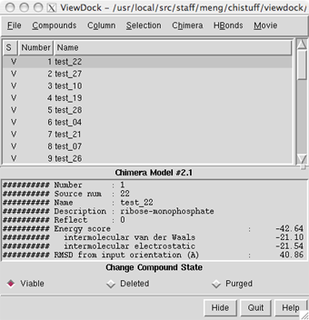

DOCK calculates possible binding modes, given the structures of ligand and receptor molecules. In a DOCK search, each compound (typically from a database of many thousands) is treated as a possible ligand, and the structure of a target macromolecule is treated as the receptor. Various scoring methods are used to identify the most favorable binding modes of a given molecule and then to rank the molecules. The output consists of many candidate ligands in their best-scoring poses. It is then up to human users to look through the results and decide which compounds should be tested in the real world. For further details, please consult the DOCK web site.
ViewDock facilitates the interactive selection of compounds from the output of DOCK. With a single mouseclick, a user can view an individual docked molecule and simultaneously display its name, scores, and other information. The list of molecules can be sorted in various ways, edited to remove compounds deemed uninteresting, and saved for future reference. For a step-by-step example, see the ViewDock tutorial.
The state of ViewDock is included in saved sessions. DOCK (versions 4, 5, 6) scoring grids can be visualized with Volume Viewer.
There are several ways to start ViewDock, a tool in the Surface/Binding Analysis category. Starting the tool brings up a dialog for opening the file of docked molecules. Format options include:
Another way to start ViewDock is with the viewdock command, which loads a specified file of docking results.
When the file of docked molecules has been read, the ViewDock ListBox will appear and the first molecule will be displayed in the main Chimera window. In most cases, a user will also display the receptor structure, which can be opened either before or after the file of docked molecules. ViewDock is controlled via the ListBox and its menu.
| ViewDock ListBox |
|---|
|  |
The upper panel lists the compounds along with their status settings (S) and the values of various descriptors. Available descriptors can be shown or hidden using the Column menu. Most descriptors are simply read from the file of docked ligands; what descriptors are present and available depends on the DOCK version and options used. In addition:
A compound can be chosen by clicking on its line in the upper panel. Multiple compounds may be chosen at once. Chosen lines are highlighted and only the chosen compounds are displayed. Ctrl-click adds to an existing choice rather than replacing it. To highlight a block of compounds without having to hold down the mouse button, click on the first (or last) and then Shift-click on the last (or first) in the desired block. For results from DOCK versions 4 and later, the lower panel shows detailed information when a single compound is chosen.
Any numerical descriptors from the input file are assigned as attributes of models (each docked molecule is treated as a separate model), with the attribute name derived from the descriptor name by substituting underscores for spaces, changing any capital letters to lowercase, and appending dock_ at the beginning. For example, the descriptor Energy score is assigned as an attribute of models named dock_energy_score. Such assignments allow docked compounds to be rendered (with colors or radii) or selected by their descriptor values.
Hide dismisses the ListBox without exiting from ViewDock. Quit exits from ViewDock and closes the docked molecules (like File... Close in the ListBox menu). Help brings up this manual page in a browser window. When the ListBox is hidden or obscured by other windows, it can be resurrected using the Raise option for the ViewDock instance in the Tools menu. The instance's Hide and Quit options have the same effect as the corresponding ListBox buttons.
Three mutually exclusive states are possible for each compound: Viable, Deleted, or Purged. The initial state is viable, but if a molecule is deemed uninteresting, it can be changed to deleted or purged by clicking on the checkboxes near the bottom of the ListBox. Clicking a status checkbox changes the status of all chosen compounds.
In general, Viable compounds are interesting (or have not been looked at yet), Deleted compounds are less interesting but may deserve another look, and Purged compounds are meant to be discarded. The Compounds menu controls (based on status) which compounds are listed in the upper panel.
When structures are written out using File... Rewrite, viable and deleted but not purged structures are included in the output file. In contrast, structures in all three states are included in a file written out using File... Save or File... Save As. The states of the molecules are also recorded in these output files, which can be input to later sessions of ViewDock. No matter how the molecules are sorted in the ListBox, they remain in their original order in a saved PDB file.
There are other ways to change status besides clicking a status checkbox:
The HBonds menu allows incorporation of hydrogen bonding information calculated with FindHBond. If FindHBond has not already been run, its interface will appear. If FindHBond has been run, but one wishes to run it again with different parameters, it can be started from the main Chimera Tools menu or by using another of the standard ways to start tools. When FindHBond is used to help screen compounds in ViewDock, the inter-model setting is most efficient.
The HBonds... Add Count... options add hydrogen-bonding statistics as descriptor columns:
HBonds... Change Compound State allows changes in compound status based on the number of hydrogen bonds to the receptor or to a selected portion of the the receptor. To use different hydrogen-bonding criteria, remember to change the compounds back to their previous states before re-running the hydrogen bond calculation. (If many status changes have been performed manually, it may be helpful to use File... Save or File... Save As before making further changes.)
Compounds can be chosen based on the values of any (or all) of the available descriptors, including hydrogen-bond statistics calculated with FindHBond (see the HBonds menu).
Compounds... Choose by Value brings up a dialog for defining value ranges. Whichever descriptors are shown in the ListBox are available for choosing compounds. To add a descriptor to the Choose by Value dialog, simply show the descriptor in the ListBox using the Column menu. Any descriptor shown in the ListBox but not of interest for choosing compounds can be disregarded by unchecking the corresponding checkbox.
Checkboxes under Choose from designate which compounds should be considered, on the basis of their status. The values displayed in the histograms and/or lists only come from this designated set of compounds.
Numerical descriptors are depicted in a histogram. Within a histogram, two markers are shown as vertical bars. Clicking on a marker shows its Value in black. Clicking elsewhere within the histogram shows the Value (X-coordinate) of the mouseclick in gray. A marker can be moved by changing its Value and then pressing Enter (return) or by dragging it horizontally with the left mouse button. Holding the Shift key down reduces the speed (mouse sensitivity) of marker dragging tenfold, allowing finer control. Only compounds with values between the markers (inclusive) will be chosen.
String-valued descriptors are displayed as a list. Clicking a line highlights just that line; Ctrl-click adds to an existing choice rather than replacing it. To highlight a block of lines without having to hold down the mouse button, click on the first (or last) and then Shift-click on the last (or first) in the desired block. Only compounds with highlighted values will be chosen.
A message of the form N of M compounds applicable reports how many of the compounds (N) of those designated to choose from (M) meet all current criteria. These compounds will be chosen when Apply or OK (which also dismisses the dialog) is pressed.
Display can controlled in many ways. Because of the potential for confusion, however, it is recommended that the ViewDock ListBox, not commands, be used to control the display of the docked compounds.
The remainder of this section explains the interplay among display controls, but can be skipped if only the ViewDock ListBox will be used to control compound display.
Individual compounds are submodels of a single model (model 0, for example) and are specified #0.1, #0.2, etc. (see atom specification syntax). Even though they are termed submodels, the display of each compound can be independently disabled or enabled at the model level (see display hierarchy). Within ViewDock, there are two ways to control model-level display:
For example, if only the first five compounds are display-enabled,
Command: ~disp #0.2will work. In contrast, other commands like
and
Command: disp #0.2
but not
Command: disp #0.8
Command: label #0.7are executed, although their effects may not be visible until the corresponding molecules are displayed. The command
and
Command: color pink #0.6
Command: disp #0will display only the compounds whose display is enabled at the model level.
Note that DOCK 4 interprets information about each molecule as Name or Description based on where this information occurs in the input database file. Here are examples of a single molecule from (A) a Mol2 database file input to DOCK 4, (B) a Mol2 output file from DOCK 4, and (C) a PDB output file from DOCK 4. Multiple-molecule files are simply concatenations of the data for single molecules. Number is sequential number in order of occurrence in the file from DOCK, and Source num is the sequential number in order of occurrence in the database file input to DOCK.